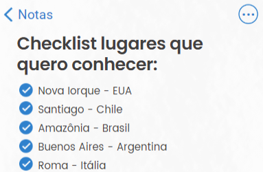
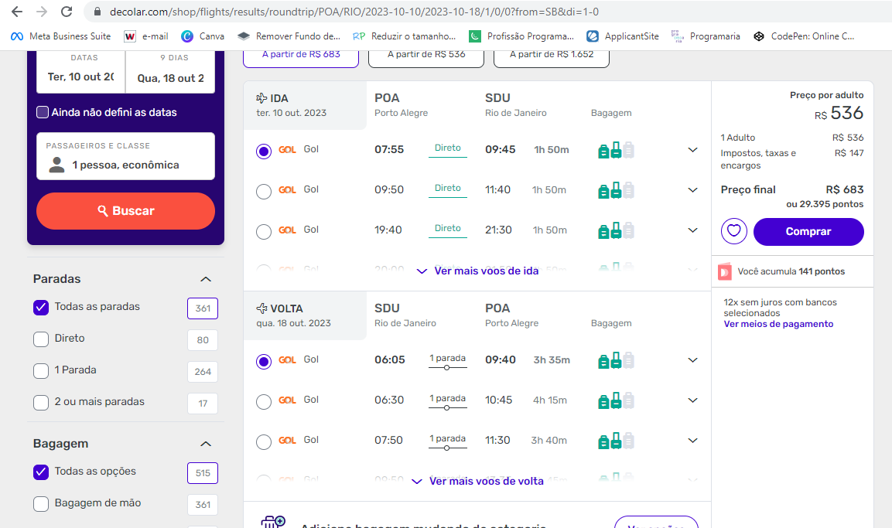
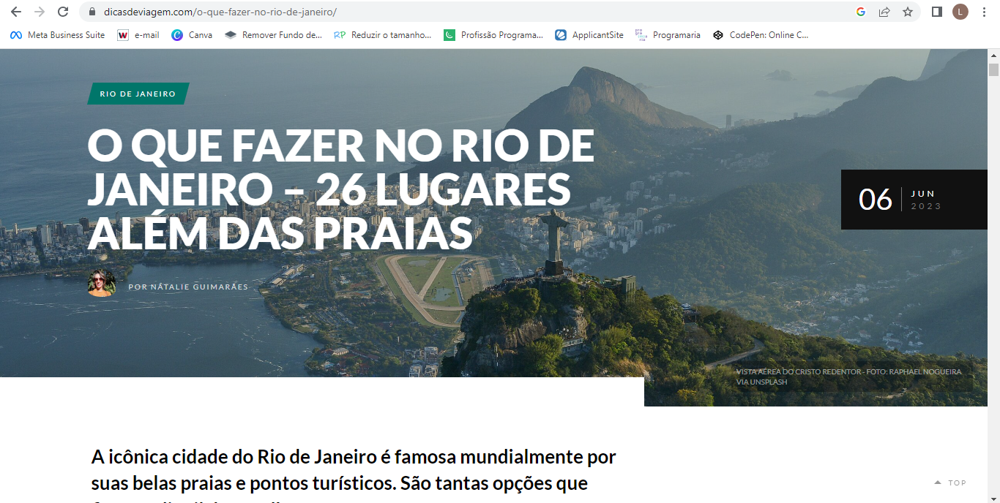
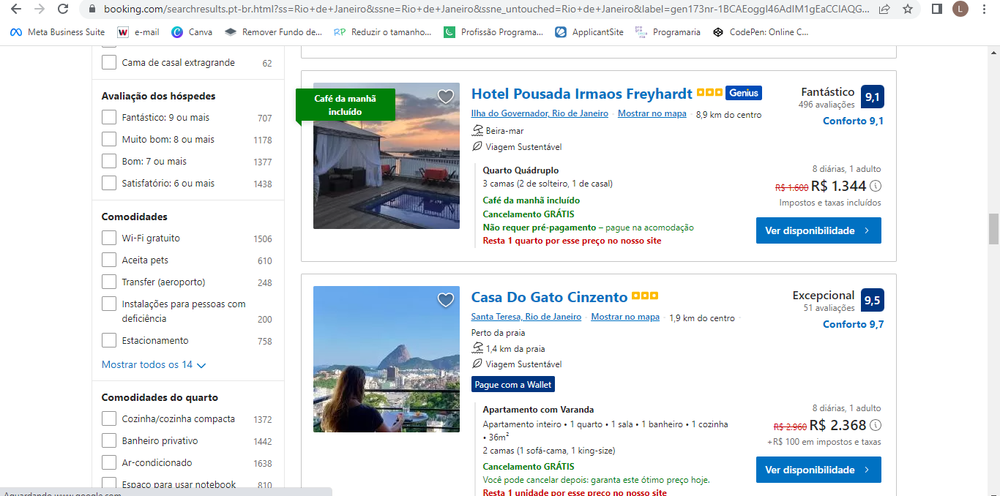
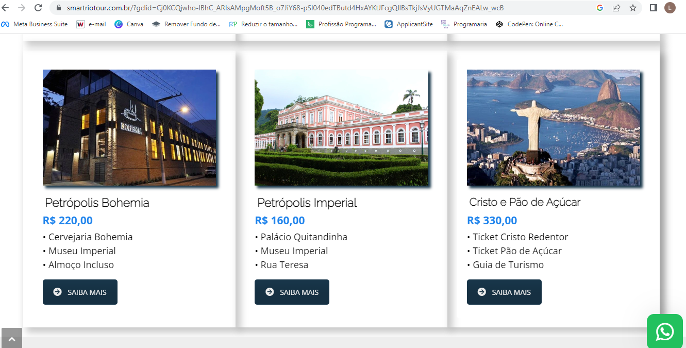
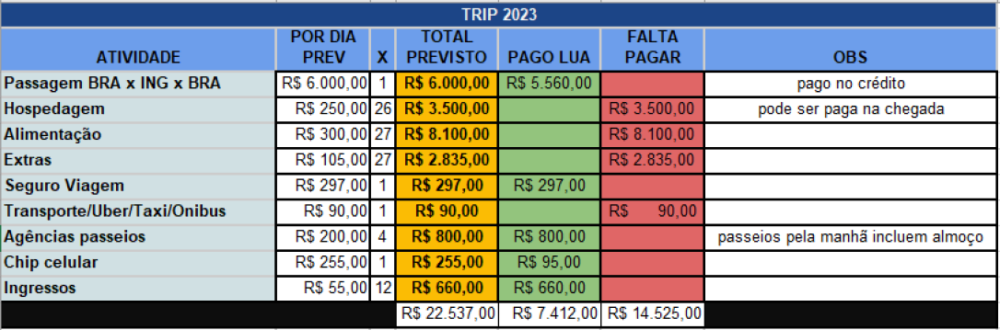

Você está com desejo de viajar, mas ninguém dos seus amigos ou familiares podem na mesma data que você? Quando você tem disponibilidade, as pessoas não têm e, assim, você acaba nunca saindo do lugar? Estes contratempos não serão mais um problema. Aqui no Viaje Solo, você irá aprender como organizar uma viagem solo com segurança e ainda ganhará dicas extras para sua organização financeira.
O primeiro passo é criar uma lista com os destinos que você tem interesse em conhecer. Caso ainda não tenha nenhum em mente, faça uma pesquisa na internet com a seguinte frase: “destinos mais baratos para o ano de (insira o ano que você pretende fazer a viagem)” e comece a escolher.
Procure um destino de acordo com o propósito de sua viagem, como por exemplo, viagem cultural e histórica, viagem de descanso e lazer, viagem que envolva o contato com natureza, rios, cachoeiras, viagem para lugares mais quentes ou mais frios ou até mesmo uma viagem de aventuras e diversão. Há inúmeras possibilidades para você explorar!
Pesquise se o valor da passagem para o destino escolhido é viável para você, e caso não seja, passe para a próxima opção da sua lista de destinos. O ideal é sempre ter mais de uma opção.
Pesquise as opções de locais e passeios de seu interesse para poder desbravar e conhecer cada canto do seu destino escolhido. Você pode pesquisar na internet, em blogs de viagens com dicas de pessoas que já foram para este destino ou nas #hashtags do Instagram para, assim descobrir o que deseja fazer.
De acordo com o seu roteiro, pesquise seu local de hospedagem e dê preferência para locais onde você consiga fazer refeições a pé, se deslocar próximo a lugares que você possa frequentar a noite, tornando, assim, o roteiro mais seguro e econômico.
Verifique que tipo de hospedagem lhe agrada mais, se você está disposto a se hospedar em hostel, dividir quarto com outras pessoas, se você prefere a tranquilidade de um hotel em um quarto sozinho, ou alugar um apartamento com mais espaço, onde possa fazer suas próprias refeições.
Dica: se você está viajando solo, aconselho se hospedar em hostel/hotel, onde você pode conhecer outras pessoas, pedir dicas de lugares onde ir e o que fazer no seu tempo livre. A viagem se torna mais leve e você tem a oportunidade de expandir seus horizontes.
Pesquise agências que façam os passeios que você não se sente segura(o) para fazer sozinha(o), ou se você gosta de saber mais sobre os lugares e ouvir as explicações e histórias, o ideal é estar acompanhada(o) de um guia.
Entre em contato com as agências para verificar como funcionam os passeios, valores, horários, se há transportes disponíveis para levarem você até o local de sua hospedagem e etc.
Após as pesquisas e cotações, escolha a melhor opção e que esteja de acordo com o seu propósito de viagem, incluindo a parte financeira. Peça para a agência lhe encaminhar tudo que inclui em cada passeio, assim como dicas do que precisa levar, vestir e etc., pois existem passeios que exigem vestimentas especificas ou até mesmo calçados que vão lhe trazer maior conforto e segurança.
É muito importante você lembrar sempre de pesquisar se há algum tipo de exigência para entrar no destino que você está indo, como vacinas, seguro viagem, verificar qual tipo de seguro viagem é necessário (alguns destinos exigem que o seguro cubra certas especificidades).
Faça um cálculo de quantas refeições você fará por dia e quanto pretender gastar em média em cada refeição, (lembre-se que alguns passeios incluem refeições, então você já irá economizar nestes dias).
Verifique o tipo de transporte que irá utilizar (transporte público, taxi, uber, etc.), e faça cotações para lugares que você já sabe que irá, como por exemplo a sua chegada do aeroporto até sua hospedagem. Reserve, também, um valor extra para alguma compra que venha a fazer, como souvenirs, ou algum lugar que você resolva visitar de última hora.
Pronto! Agora com todas as escolhas feitas, monte o seu roteiro com as datas e horários, assim você já saberá tudo sobre a sua viagem, o que também facilita muito para arrumar as malas.
Além do roteiro escrito, faça uma tabela com seus gastos previstos e conforme for fazendo os pagamentos, vá adicionando a tabela, assim você saberá se está tudo dentro do planejado e quanto ainda poderá gastar.
